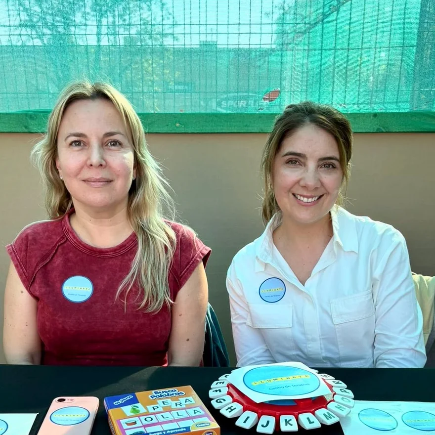

Comencé sola como mamá azul, ahora somos una comunidad de apoyo y amistad
Gloria del Villar Fundadora
Mi historia
Soy Gloria — mamá y fundadora de Centro Ilumínate
Al centro llegan mamás con un diagnóstico de la semana pasada y mamás que llevan años repitiendo la misma explicación en cada colegio. Las dos cosas las conozco.
Soy mamá azul: así nos decimos algunas mamás de niños y niñas del espectro autistas. Lo que sé lo aprendí preguntando, equivocándome y volviendo a preguntar, hasta que decidí formar lo que nunca encontré, un centro enfocado en niños y niñas con necesidades especiales que no se sintiese como un centro médico, frío, lejano, pasajero… sino como un segundo hogar que te abrace en tu dolor y te apoye con las necesidades de tu hijo.
Gloria del Villar Coach de Neurodivergencia, Fundadora y Directora de Centro Ilumínate
Cómo llegamos a ser dos
Ahora el centro lo dirigimos 2 mamás.
Después conocí a Paola. Lleva más de veinte años trabajando en la clínica y pedagogía familiar enfocada a personas neurodivergentes: lo que yo entendía como mamá, ella lo entiende además como profesional. Desde ese día el centro lo dirigimos las dos.
Hoy somos 9 profesionales certificados en manejo de pacientes neurodivergentes y hemos acompañado a innumerables familias. Acá en Centro Ilumínate ya puedes encontrar fonoaudiología, terapia ocupacional, psicología, psicopedagogía y odontopediatría.
9 Terapeutas están disponibles para ti

El grupo de mamás azules
Las mamás también
necesitábamos un lugar.
Cuando diagnosticaron a mi hijo, el camino empezó a sentirse solitario y lleno de interrogantes. Al poco andar me di cuenta de que las mamás dejábamos a los niños en sus sesiones y nos íbamos con dudas, incertidumbres y desvelos rondándonos la cabeza. Eran desafíos que no cualquier madre comprende del todo, pero que nosotras compartíamos al milímetro.
Lo que empezó como conversaciones espontáneas entre sesión y sesión, pronto se convirtió en un refugio inolvidable. Nos dimos cuenta de que, más allá del rol de cuidadoras, necesitábamos un espacio propio para nosotras. Así nació esta comunidad: un grupo de amigas con quien compartir nuestros momentos difíciles y organizar talleres para aprender, pero que también se junta a descansar, reír y desconectar de la rutina.
¿Te nos unes por una copita de vino? Escríbeme y súmate a nuestra próxima actividad.
¿No sabes si perteneces a esta comunidad?
Cuéntame si alguna vez
has pensado...
“Siento que el entorno no entiende lo agotador que es sobrellevar los estímulos del día a día.”
“Toda mi agenda semanal gira en torno a sesiones, informes, evaluaciones y trámites interminables.”
“Me cuesta encontrar espacios donde pueda hablar de lo que me pasa sin sentirme juzgada.”
“Me preocupa el futuro y cómo lo van a tratar en la escuela o en la calle cuando yo no esté presente.”
“A veces celebro logros de mi hijo que nadie más a mi alrededor comprende lo gigantescos que son.”
“Extraño tener un momento para mí, tomarme un café tranquila y conversar con alguien que me entienda a la primera.”
“Siento que me convertí en la terapeuta, abogada y gestora de mi hijo, y olvidé un poco quién era yo.”
“Paso horas investigando en internet... a las 2 AM buscando respuestas que nadie me sabe dar.”
Dónde estamos
Av. Las Condes 10.415, oficina 9.
Conoce nuestro centro en Las Condes, Santiago. Hay patio, sala de juego y estacionamiento...
Atendemos de lunes a viernes de 9:00 a 20:00 h, y los sábados de 9:00 a 17:00 h.
Si quieres venir a verlo antes de decidir cualquier cosa, se puede: nos avisas y te lo mostramos.
Hablemos
¿No sabes por dónde partir?
Cuéntanos tu caso por WhatsApp: te decimos qué terapia o evaluación corresponde, con qué especialista y con qué valores, sin compromiso.
Escríbenos por WhatsApp